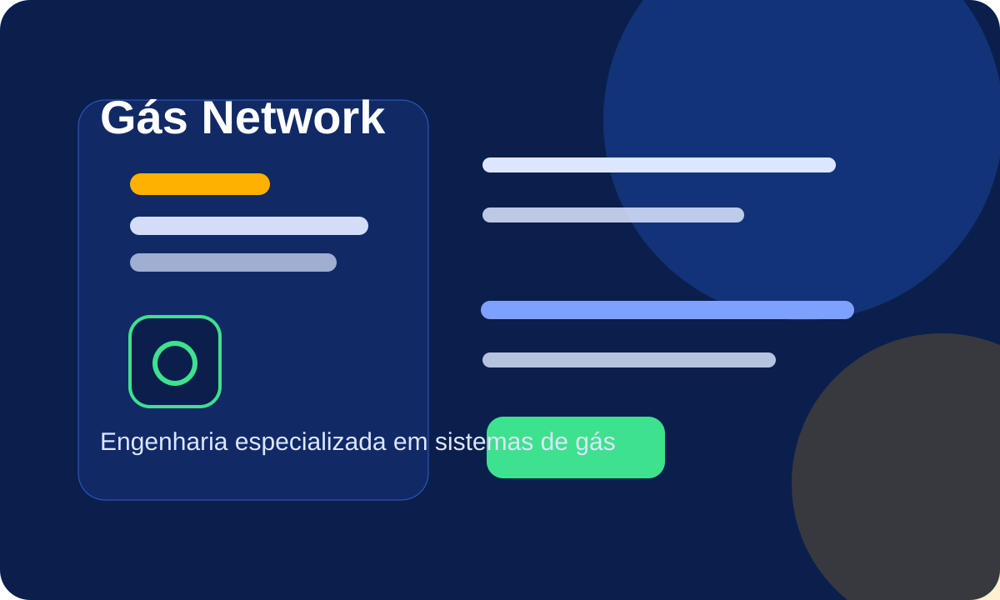

1
Aplicação de resina em tubulação de gás (sem quebra)
Recuperação interna de tubulações com mínima intervenção civil.
Ver página do serviço →A Gás Network Engenharia atua com instalação de rede de gás, teste de estanqueidade, laudo técnico, emissão de ART, reparos, recuperação sem quebra, vistorias, adequações e manutenção em São Paulo e região.

O site da Gás Network Engenharia foi estruturado para transmitir autoridade técnica, credibilidade e capacidade de execução em sistemas de gás natural e GLP. A proposta central é resolver problemas com segurança, documentação técnica, liberação e menor impacto na operação do cliente.
As páginas abaixo receberam destaque por concentrarem demanda comercial, busca local e forte apelo de segurança e regularização.
Recuperação interna de tubulações com mínima intervenção civil.
Ver página do serviço →Ensaios para verificar vazamentos e conformidade da rede de gás.
Ver página do serviço →Laudos técnicos para regularização, vistoria e segurança operacional.
Ver página do serviço →Responsabilidade técnica formal para serviços e adequações em gás.
Ver página do serviço →Correções seguras em redes de GN e GLP com foco em conformidade.
Ver página do serviço →Recuperação interna de tubulações com mínima intervenção civil.
Saiba mais →Ensaios para verificar vazamentos e conformidade da rede de gás.
Saiba mais →Laudos técnicos para regularização, vistoria e segurança operacional.
Saiba mais →Responsabilidade técnica formal para serviços e adequações em gás.
Saiba mais →Correções seguras em redes de GN e GLP com foco em conformidade.
Saiba mais →Implantação de redes de gás natural para residências, comércios e indústrias.
Saiba mais →Projetos e instalações de rede GLP com segurança e desempenho.
Saiba mais →Montagem de redes em cobre conforme normas técnicas.
Saiba mais →Execução de redes PEX 20 mm para aplicações específicas.
Saiba mais →Instalação de redes PEX 32 mm com dimensionamento técnico.
Saiba mais →Soluções em redes galvanizadas para sistemas de gás.
Saiba mais →Execução e adequação de prumadas em edifícios e condomínios.
Saiba mais →A comunicação da empresa reforça compromisso com engenharia aplicada, procedimentos consistentes e documentação adequada para instalações, reparos, inspeções e processos de regularização em sistemas de gás.
Levantamento do cenário, identificação de risco, norma aplicável e objetivo do cliente.
Definição do serviço ideal: laudo, ART, teste, adequação, recuperação ou instalação.
Implementação técnica com testes, emissão documental quando aplicável e orientação final.